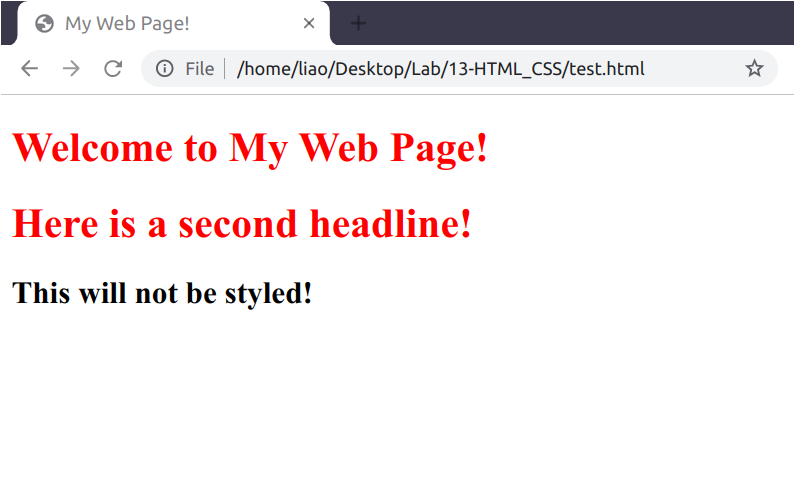
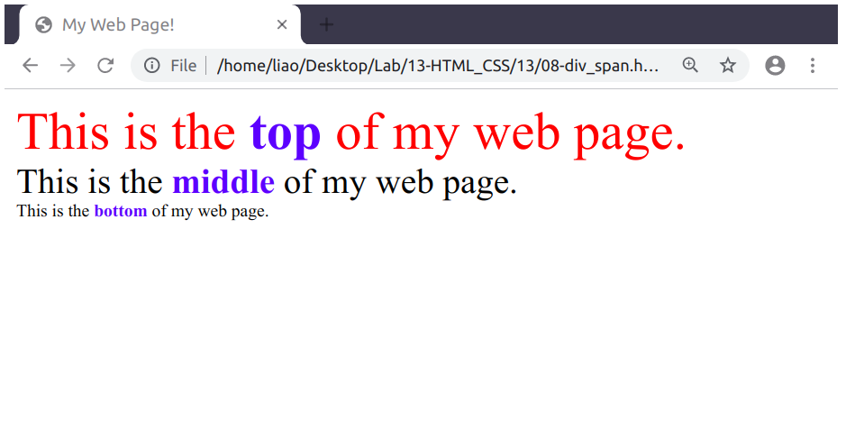

11 擷取網路資料：網頁剖析
11.1 HTML
上次實習課介紹過，透過 HTTP request/response，瀏覽器可以將接收到的 HTML 文字格式轉換成漂亮的網頁。但這並不精確，因為現在的網頁絕大多數不只是用 HTML 寫成的，藏在 HTML 裡面的，尚包含 CSS 與 JavaScript。在瀏覽器看到的漂亮的網頁裡，HTML 只貢獻了一部分的視覺呈現，許多的其它效果是 CSS 以及 JavaScript 的貢獻。這週實習課，我們介紹的主題是 HTML 和 CSS。

Figure 11.1: Hypertext Transfer Protocol (HTTP)
- 基本上，HTML 的功能是用來定義一個網頁的結構，而 CSS 則是用來裝飾 HTML。
11.1.1 HTML 結構
HTML 是純文字的格式，因此只要使用文字編輯器編輯檔案，並將檔案的附檔名命名為
.html，即可製作出一份 HTML 檔。HTML 文件的一開頭的
<!DOCTYPE html>，目的在告訴瀏覽器這份 HTML 文件是使用 HTML5 的版本。HTML 是由一個個標籤 (tag) 所組成。一個 tag 通常會有「開頭」和「結尾」的標記 (例如
ptag 以<p>開頭，以</p>結尾)，開頭 (start tag) 與結尾 (end tag) 之間，可以放入其它資料 (例如文字或其它的 HTML tag)。一個 HTML tag 裡面，有時可以放入特定的屬性 (attribute) (依據 tag 的種類而定)，這些屬性的目的是提供額外的資訊，告訴瀏覽器如何呈現網頁。-
常見的 HTML tag25
-
<html></html>: contents of web page-
<head></head>: metadata about the web page-
<title></title>: title of the page
-
-
<body></body>: body of the page-
<h1></h1>: header (h1 is the largest header, h6 is the smallest header) -
<ul></ul>: unordered list -
<ol></ol>: ordered list-
<li></li>: list item (must be inside either<ul></ul>or<ol></ol>)
-
-
<a href="path/to/other/page/or/url"></a>: Link -
<img src="path/to/img.jpg" height="200" width="300">: image stored atsrcattribute, whcih can also be a URL- no end tag
-
height,widthare optional
-
<table></table>: table-
<th></th>: table header -
<tr></tr>: table row -
<td></td>: table data (cell)
-
-
-
-
11.2 CSS
HTML 定義的是一個網頁的結構，它就像是網頁的骨架。但若要讓網頁變得好看，我們需要在這定義好的骨架之上再添加一些裝飾。這就是 CSS 的功能。
-
有三種方式可以為 HTML 元素增添 CSS 樣式
- 直接在 HTML 元素中添加
style屬性：<h1 style="color:blue;text-align:center;"></h1> - 在 HTML 文件中的
<style></style>內定義 CSS - 在外部文字檔中定義 CSS，並在 HTML 文件中透過
<link rel="stylesheet" href="path/to/styles.css">匯入 HTML
由於直接將 CSS 直接寫在 HTML 元素中的
style屬性會造成大量的重複，我們通常偏好使用方法 2 或方法 3 - 直接在 HTML 元素中添加
11.2.1 id & class
-
為了讓 HTML 與 CSS 盡量各司其職 (HTML 負責結構，CSS 負責樣式)，我們一般不喜歡將 CSS 樣式直接定義在 HTML 元素內。這時，我們會透過 CSS selector 找出想要添加裝飾的 HTML 元素。例如，下方的
<style></style>中，使用h1作為 CSS selector 可以讓所有的<h1></h1>元素內的文字變成紅色<!DOCTYPE html> <html> <head> <title>My Web Page!</title> <style> h1 { color: red; } </style> </head> <body> <h1>Welcome to My Web Page!</h1> <h1>Here is a second headline!</h1> <h2>This will not be styled!</h2> </body> </html> -
若在 HTML 元素內加入
id或class屬性 (或其它任意屬性)，我們就可以很方便地使用這兩個屬性作為 CSS selector：<!DOCTYPE html> <html> <head> <title>My Web Page!</title> <style> #top { font-size: 36px; color: red; } #middle { font-size: 24px; } #bottom { font-size: 12px; } .name { font-weight: bold; color: blue; } </style> </head> <body> <div id="top"> This is the <span class="name">top</span> of my web page. </div> <div id="middle"> This is the <span class="name">middle</span> of my web page. </div> <div id="bottom"> This is the <span class="name">bottom</span> of my web page. </div> </body> </html>
11.3 Web Scraping with rvest
了解 HTML 的結構以及 CSS selector 的使用之後，我們就可以運用這些知識進行網頁剖析。
首先，我們以模仿學院的網站進行示範。我們可以運用 httr::GET() 去將網頁下載到 R 裡並轉換成 html 物件：
library(httr)
# https://rlads2021.github.io/11/imt.html
resp <- GET("https://rlads2021.github.io", path = c("11", "imt.html"))
resp$status_code#> [1] 200
resp$url#> [1] "https://rlads2021.github.io/11/imt.html"
html <- content(resp)
html#> {html_document}
#> <html>
#> [1] <head>\n<meta http-equiv="Content-Type" content="text/html;charset=UTF-8" ...
#> [2] <body>\n <div class="institute">\n <img src="https://li ...接著就可以使用 rvest 提供的函數進行網頁剖析。rvest::html_nodes("<SELECTOR>") 可以讓我們使用 CSS selector 去抓取出 html 中的特定 HTML 標籤。例如，下方的程式碼即從 html 內抓出 <head> 以及 <title> 標籤：
library(rvest)
html %>% html_nodes("head")#> {xml_nodeset (1)}
#> [1] <head>\n<meta http-equiv="Content-Type" content="text/html;charset=UTF-8" ...
html %>% html_nodes("head") %>% html_nodes("title")#> {xml_nodeset (1)}
#> [1] <title>模仿學院</title>\nhtml_nodes() 回傳的是 rvest 定義的 xml_nodeset 物件。但我們想要的 (通常) 是這些 HTML 節點內的_文字_，因此我們需把 xml_nodeset 物件再傳入 html_text() 以取出其內的文字：
html %>%
html_nodes("head") %>%
html_nodes("title") %>%
html_text()#> [1] "模仿學院"有時候我們需要的不是 HTML 標籤內 (starting & ending tags 之間) 的內容，而是這些 HTML 標籤的屬性 (HTML attribute)，這時我們可以將 html_nodes() 回傳的結果再傳入 html_attr("<ATTRIBUTE>")。例如，下方的程式碼即可從 <img> 標籤內取得 src 屬性 (圖片來源)：
html %>% html_nodes(".institute > img")#> {xml_nodeset (1)}
#> [1] <img src="https://linguistics.ntu.edu.tw/static/media/gil_logo.c593c5b8.p ...
html %>%
html_nodes(".institute > img") %>%
html_attr("src")#> [1] "https://linguistics.ntu.edu.tw/static/media/gil_logo.c593c5b8.png"